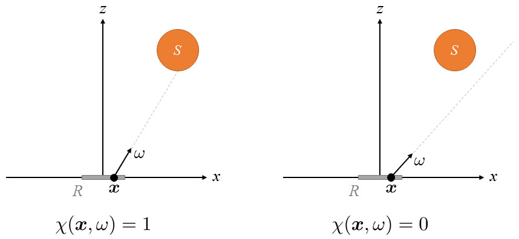

CS114 Project 2:
Monte Carlo Integration & Path Tracing
Due: Tuesday May 3, 2016 (23:59pm Pacific Time)
Work individually or in groups of two.
Part 1. Monte Carlo Integration
In this part, you will implement several Monte Carlo estimators for computing integrals and compare their efficiencies.
Please submit a ZIP package for this task containing:
- A report (in PDF format) with all experimental results (see individual tasks for details);
- All your source code. You can use any programming language, but C++ is highly recommended as your C++ implementations will come in handy for Part 2.
Task 1. One-Dimensional Problems
Task 1-1. Warming up
Compute the following integral $$ I = \int_{-2}^2 \exp\left(-\frac{x^2}{2}\right)\,\mathrm{d}x, $$ (where $\exp()$ denotes the natural exponential function) using Monte Carlo integration with density function $$ p(x) \equiv \frac{1}{4} \quad\text{for all $-2 \leq x < 2$.} $$
You should start with drawing $N = 100\ 000$ samples $x_1,\ x_2,\ \ldots,\ x_N \in [-2, 2)$:
- If you choose to implemenmt this task with C++ (which is recommended!), use C++11's pseudo-random number generator instead of the outdated rand() function.
- For Python users, use numpy's random module.
- For Java users, use the built-in Random class.
With $x_1,\ x_2,\ \ldots,\ x_N$ generated, you then need to evaluate $\hat{I}_{\!1},\ \hat{I}_{\!2},\ \ldots,\ \hat{I}_{\!N}$ given by: $$ \hat{I}_{\!j} = \frac{\exp(-x_j^2/2)}{p(x_j)} \quad\text{for $j = 1,\ 2,\ \ldots, N$}, $$ and include the following in your report:
- Sample mean: $$ \bar{I} := \frac{1}{N} \sum_{j = 1}^N \hat{I}_{\!j}, $$
- (Scaled) deviation: $$ \bar{s} = \frac{2s}{\sqrt{N}}, $$ with $s$ being sample standard deviation given by $$ s := \sqrt{\frac{\displaystyle\sum_{j=1}^N \left(\hat{I}_{\!j} - \bar{I}\right)^2}{N - 1}}. $$ (See this if you are interested to know why $s$ has $N - 1$ instead of $N$ in its denominator.)
Please execute your code 10 times (with non-fixed random seeds), and you should get 10 sets of slightly different $\bar{I}$ and $\bar{s}$ values. Report all of them (rounded to three decimal places) in a table that looks like:
| Round | $\bar{I}$ | $\bar{s}$ |
| 1 | x.xxx | x.xxx |
| 2 | x.xxx | x.xxx |
| $\vdots$ | $\vdots$ | $\vdots$ |
| 10 | x.xxx | x.xxx |
Remark: If you implement everything correctly, the interval $[ \bar{I} - \bar{s},\ \bar{I} + \bar{s} ]$ should contain the correct answer 2.3926 about 95% of the time. As a result, this interval is called a 95% confidence interval.
Task 1-2. Integrals over Unbounded Intervals
Compute the following integral $$ I = \int_{1}^{\infty} \exp\left(-\frac{x^2}{2}\right)\,\mathrm{d}x. $$
Since this integral is defined over the unbounded interval $[1, \infty)$, uniform distributions cannot be used. Instead, please draw $\xi$ uniformly from $[0, 1)$, and set $$ x = 1 - \frac{\log \xi}{\lambda} $$ (where $\log()$ is the natural logarithm function) with some fixed $\lambda > 0$. In this case, $x$ will be distributed exponentially with probability density $$ p(x ; \lambda) = \lambda \exp(-\lambda (x - 1)). $$
Please try three different $\lambda$ values: 0.1, 1.0, and 10.0. For each $\lambda$, create a table with 10 sets of $\bar{I}$ and $\bar{s}$ values each of which uses $N = 100\ 000$ independent samples (similar to Task 1-1). Then, discuss in your report:
- Which $\lambda$ value has led to an estimator with best efficiency?
- Optional: Why? (You do not have to provide rigorous math, but try including some high-level explanations.)
Task 2. Integrals over Unit Spheres
Task 2-1. Surface Area of the Hemisphere
As shown in class, the surface area of a unit hemisphere can be computed using sphere coordinates ($\theta$, $\phi$) as $$ \int_0^{2\pi} \int_0^{\pi/2} \sin\theta \mathrm{d}\theta \mathrm{d}\phi. $$ Let $A := [0, \frac{\pi}{2}) \times [0, 2\pi)$ be a 2D rectangle, then the previous integral can be rewritten as $$ I := \int_A \sin({\bf x}[1])\,\mathrm{d}{\bf x}, $$ where ${\bf x}$ is a 2D vector and ${\bf x}[1]$ denotes its first component (that is, if ${\bf x} = (a, b)$, then ${\bf x}[1] = a$).
Use Monte Carlo integration to estimate $I$ by uniformly sampling ${\bf x}$ from $A$. That is, generating each sample by:
- Setting $$ {\bf x}_j \gets \left(\frac{\pi}{2} \xi_{j,1},\ 2\pi \xi_{j,2} \right) \quad\text{for $j = 1, 2, \ldots, N$,} $$ with $\xi_{j,1}$ and $\xi_{j,2}$ drawn independently from $U[0, 1)$;
- Evaluating $\hat{I}_{\!j}$ accordingly.
Include a table similar to Task 1-1 in your report.
Task 2-2. Arbitrary Spherical Function
Let $$ \begin{aligned} \theta &= \arccos(\xi_1),\\ \phi &= 2\pi\xi_2, \end{aligned} $$ where $\xi_1,\ \xi_2$ are drawn independently from $U[0, 1)$. Then it can be shown that $\omega := (\theta, \phi)$ in spherical coordinates is distributed uniformly over the hemisphere centered at (0, 0, 0). That is, $$ p(\omega) \equiv \frac{1}{2\pi}, $$ for all $\omega$'s generated this way.
Use this sampling scheme to estimate the following integral: $$ I = \int_{\Omega_+} (\cos\theta\,\sin\theta\,\cos\phi)^2\,\mathrm{d}\omega, $$ where $\Omega_+$ denotes the entire unit hemisphere with $\theta \in [0, \frac{\pi}{2})$. Include a table similar to Task 1-1 in your report.
Task 3. Estimating Radiant Flux
Consider a simple 3D scene with two objects:
- A unit square $R$ in the XOY plane centered at the origin (i.e., with two corners at $(-0.5, -0.5, 0)$ and $(0.5, 0.5, 0)$);
- A spherical light source $S$ centered at $(1, 1, 5)$ with radius 1.
This light source is a uniform emitter: its emitted radiance (at any point on the surface in any direction) is fixed to $L = 100$. Then, the radiant flux (i.e., power) received by $R$ equals $$ P = \int_S \int_{\Omega_+} L \cdot \chi({\bf x}, \omega) \cdot \cos\theta\,\mathrm{d}{\omega}\,\mathrm{d}{\bf x}, $$ where $\theta$ is the angle between $\omega$ and the Z-axis, and $\chi$ is an indicator function given by $$ \chi({\bf x}, \omega) = \begin{cases} 1 & \text{if ray $({\bf x}, \omega)$ hits $S$,}\\ 0 & \text{otherwise}. \end{cases} $$ Two examples are shown below: 
Use Monte Carlo integration to estimate $P$ by uniformly sampling ${\bf x} \in R$ and $\omega \in \Omega_+$. Pick proper number of samples so that the resulting estimation is accurate to one decimal place. Report your estimated $P$ value and the number of samples used.
Extra Credit: Use non-uniform sampling for $\omega$ to achieve better convergence rate. Describe in your report:
- The density function you picked;
- The way you generate samples of $\omega$;
- The number of samples needed to achieve the same accuracy (of one decimal place).